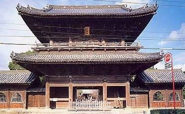
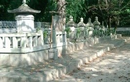
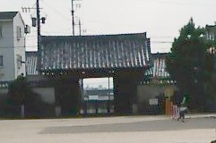

先般、所用があって岡崎市（愛知県）へ行ってきた。岡崎は松平家発祥の地なので、大樹寺（だいじゅじ）という松平家の菩提寺がある。せっかくなので、寄ってきた。

この立派な山門は嘉永18年（1641）、三代将軍家光が建立したもので、勅願は後奈良天皇のご宸筆。山門のまっすぐ奥に見えるのが本堂。本堂の裏に松平家初代から８代までの墓がある。

家康は松平９代目であるが、徳川家の菩提寺は江戸の増上寺と寛永寺。そこで大樹寺に徳川家の墓はない。しかし大樹寺には家康から14代将軍までの等身大の位牌がある（最後の 15代将軍慶喜は明治維新のあと死去したので位牌はない）。
で 山門の真ん中で本堂に背を向けて立つと、まっすぐ200Mほど先に総門がある。現在は総門と山門の間（旧 境内）に小学校があり、写っているのは総門と山門の間の校庭。

この写真をよく見ると、総門から はるか彼方にポツンと黒い点がみえる。それが岡崎城。伝承では家康は岡崎城で生まれた。そして家光は家康の裁定によって３代将軍となった。そこで家光は菩提寺の本堂からお爺さん（家康）の生まれた城がいつも見えるように山門と総門を建立した。後に小学校を作るとき、見通しを遮らないように校舎も脇へ作られた（今だって 見通しを遮る形のビルの建築許可は下りないと思われ）。
オマケ
本堂のある部屋に１本の閂が祀ってある。長細い立派な函に入っていて、貫木（かんぬき）神社と書いてある。
桶狭間の闘いの時、家康（当時は松平元康）は今川方。近くの大高城の守備についていた。今川義元が討ち取られたと聞いて、急きょ岡崎へ奔った。家康が岡崎へ帰着すると、近辺の敵対勢力がこのときとばかり攻めてきた。家康は側近とともに大樹寺に駆け込んだが、敵はそこまで押し寄せてきた。
もはやこれまでと切腹を覚悟したが、大樹寺には数百人の僧侶がいた。そのうち８割ほどが、いわゆる僧兵だった。この時点でどれくらいの僧兵がいたか不明だが、最盛期には500人くらい いたらしい。とにかくその僧兵が戦って敵を撃退した。そのとき先頭に立ち、山門の閂を振り回して奮戦したのが大男の祖洞和尚という人。おかげで窮地を脱した家康は その後 織田信長と同盟を結び、三河を平定してしてゆく。
秀忠か家光が将軍の時（どっちだったか忘れた...）、時の住職が閂を江戸へ持参。時の将軍が閂に対し、結構な額の俸禄が与えた（額も聞いたが、忘れたm(_ _)m）。以後 貫木神社として祀ってあるという。
|